Plataforma
de registro y seguimiento de casos sociales
Version documentada: 20 de septiembre de 2026 Aplicacion: Casos Sociales / Somos Defensores Desarrollado de forma independiente por: Simon Torres
Saldarriaga Contacto institucional: proteccion@somosdefensores.org
| responsablesistema@somosdefensores.org |
comunicaciones@somosdefensores.org Audiencia: personas solicitantes, equipos de validacion
y equipos de revision
Este manual explica como utilizar la version actual de la plataforma.
Las capturas se tomaron con el frontend ejecutandose en
http://localhost:3000; los datos que aparecen en listados
administrativos dependen de la conexion con la API y de los permisos del
usuario.
1. Que permite hacer la
plataforma?
La plataforma centraliza el registro y seguimiento de solicitudes
sociales. Sus funciones principales son:
Registrar solicitudes de ayuda humanitaria.
Registrar solicitudes de pasantia.
Registrar solicitudes de proteccion colectiva.
Revisar y gestionar solicitudes desde el area administrativa.
Consultar metricas y graficos de casos.
Enviar una invitacion para finalizar un caso y registrar la
respuesta de cierre.
2. Requisitos de acceso
Para personas solicitantes
Navegador web actualizado.
Conexion a internet o a la red donde este publicada la
plataforma.
Informacion personal, de contacto y del caso.
Documentos solicitados por el formulario, en el formato y tamano
aceptados.
Para personal administrativo
Una cuenta habilitada por el administrador.
Rol de revision o administracion asignado.
Correo electronico y contrasena validos.
Para ejecutar el
sistema en un entorno local
Se necesitan Node.js, npm, PHP, Composer y una base de datos
compatible con Laravel.
Desde la carpeta backend:
composer installphp artisan serve
Desde la carpeta frontend:
npm installnpm run dev
Direcciones habituales:
Frontend: http://localhost:3000
Backend: http://localhost:8000
El frontend debe tener configurada la variable
NEXT_PUBLIC_API_URL apuntando al backend. Sin esa
configuracion, las consultas y los formularios que envian informacion no
podran comunicarse con la API.
3. Navegacion publica
3.1 Pantalla de inicio
En la pantalla de inicio se muestran las opciones disponibles para
registrar un caso: ayuda humanitaria, pasantia y proteccion
colectiva.
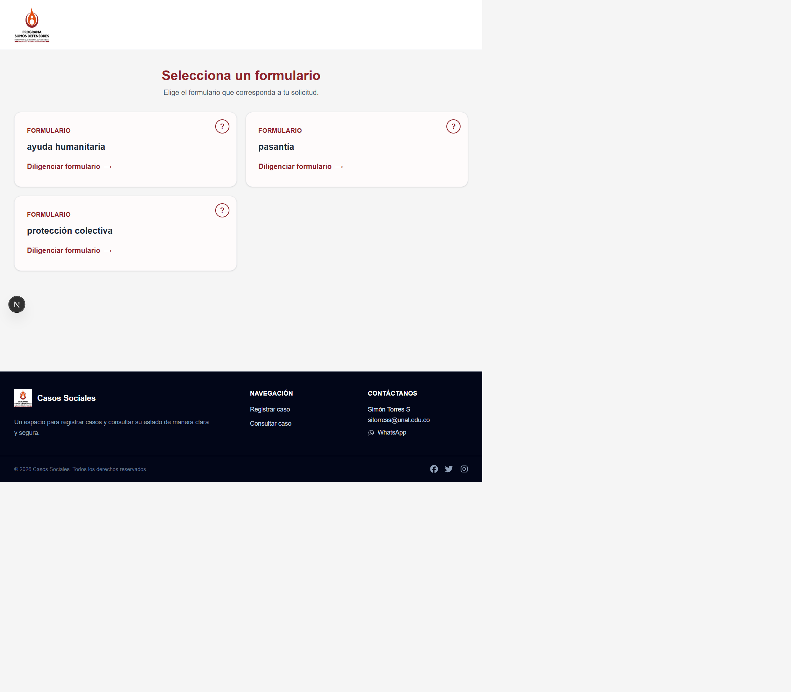
Pantalla de inicio con los formularios
disponibles
Como usarla:
Lea el nombre y la descripcion de cada formulario.
Seleccione el formulario que corresponda a su situacion.
Use la opcion de informacion (?) cuando necesite
conocer el proposito del formulario.
Presione la tarjeta para comenzar el registro.
La seccion inferior permite volver al registro y encontrar los
canales de contacto publicados por la organizacion.
3.2 Formularios disponibles
La pantalla de seleccion ofrece estas alternativas:
Ayuda humanitaria: registro de una solicitud
individual de apoyo.
Pasantia: registro de una solicitud relacionada con
el proceso de pasantia.
Proteccion colectiva: registro de una organizacion,
colectivo o comunidad que solicita medidas de proteccion.
El formulario de ayuda humanitaria se encuentra organizado por
etapas. Las etapas visibles son:
Informacion personal.
Remision de la solicitud.
Informacion del caso.
Documentos.
3.3 Diligenciar ayuda
humanitaria
Etapa 1. Informacion
personal
Etapa 1 del formulario de ayuda
humanitaria: informacion personal
En esta etapa se identifica a la persona solicitante y se registra su
contexto basico:
Fecha de ocurrencia del caso.
Nombres y apellidos.
Tipo y numero de documento.
Edad y genero.
Telefono y correo electronico.
Grupo etnico, cuando aplique.
Organizacion a la que pertenece la persona solicitante.
Condicion de discapacidad y condicion especial de salud.
Composicion del grupo familiar.
Lugar de procedencia y lugar de residencia.
Los campos marcados con * son obligatorios.
Seleccione primero el departamento para habilitar los municipios de
procedencia y residencia. Si la persona tiene hijos o personas que
conviven con ella, agregue la informacion solicitada en la seccion
familiar.
Etapa 2. Remision de la
solicitud
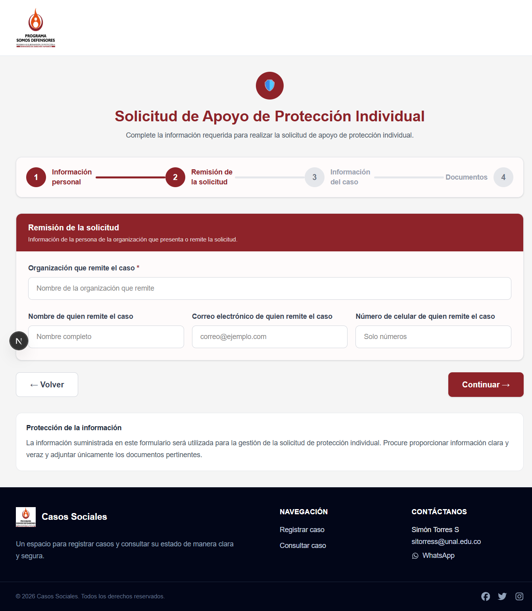
Etapa 2 del formulario de ayuda
humanitaria: remision
Esta etapa registra la organizacion que presenta o remite el caso.
Incluye el nombre de la organizacion y, opcionalmente, los datos de la
persona que realiza la remision: nombre, correo y celular.
El campo Organizacion que remite el caso es
obligatorio. Presione Continuar para avanzar.
Etapa 3. Informacion del
caso
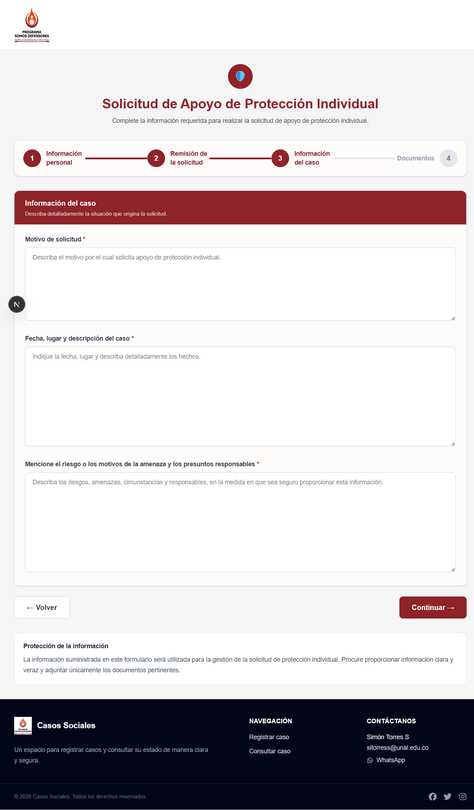
Etapa 3 del formulario de ayuda
humanitaria: informacion del caso
Describa la situacion que origina la solicitud mediante tres campos
obligatorios:
Motivo de solicitud.
Fecha, lugar y descripcion detallada del caso.
Riesgo, motivos de la amenaza y presuntos responsables.
Escriba solamente la informacion necesaria para la evaluacion y evite
incluir datos que puedan poner a alguien en riesgo.
Etapa 4. Documentos adjuntos
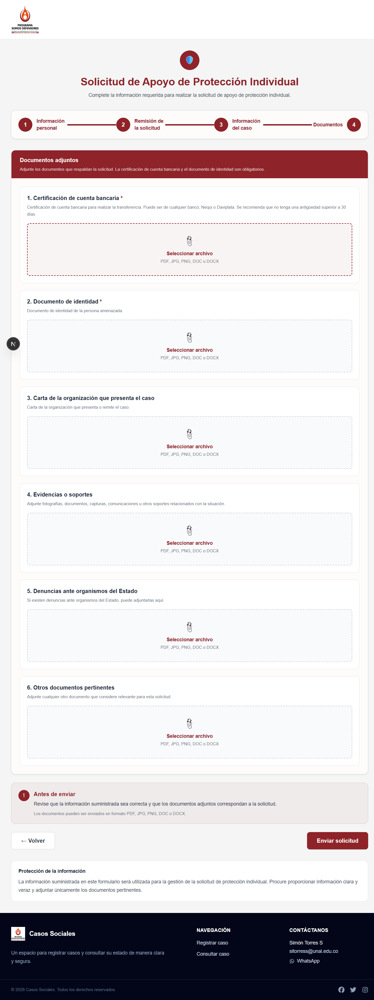
Etapa 4 del formulario de ayuda
humanitaria: documentos
Adjunte los soportes de la solicitud. Son obligatorios la
certificacion de cuenta bancaria y el documento de identidad. Tambien
puede agregar carta de la organizacion, evidencias, denuncias ante
organismos del Estado y otros documentos pertinentes.
La pantalla acepta archivos PDF, JPG, PNG, DOC o DOCX. Revise cada
archivo antes de presionar Enviar solicitud.
Procedimiento recomendado para completar las cuatro
etapas:
Ingrese la fecha del caso.
Escriba los datos exactamente como aparecen en el documento de
identidad.
Seleccione las opciones de las listas desplegables; no deje la
opcion predeterminada si el campo es obligatorio.
Use unicamente numeros en los campos que indiquen
Solo numeros.
En los campos de departamento y municipio, seleccione primero el
departamento para habilitar los municipios correspondientes.
Agregue las personas del grupo familiar con
Agregar persona cuando sea necesario.
Use Continuar para avanzar y
Volver para corregir una etapa anterior.
Adjunte los documentos solicitados y revise la informacion antes de
enviar.
Espere el mensaje de confirmacion. Conserve cualquier numero, codigo
o token que entregue el sistema.
Importante: no envie informacion de otra persona sin
contar con la autorizacion correspondiente. Revise especialmente el
numero de identificacion, el correo y el telefono, porque pueden
utilizarse para consultar o continuar el caso.
3.4 Diligenciar proteccion
colectiva
Etapa 1. Informacion
general del caso
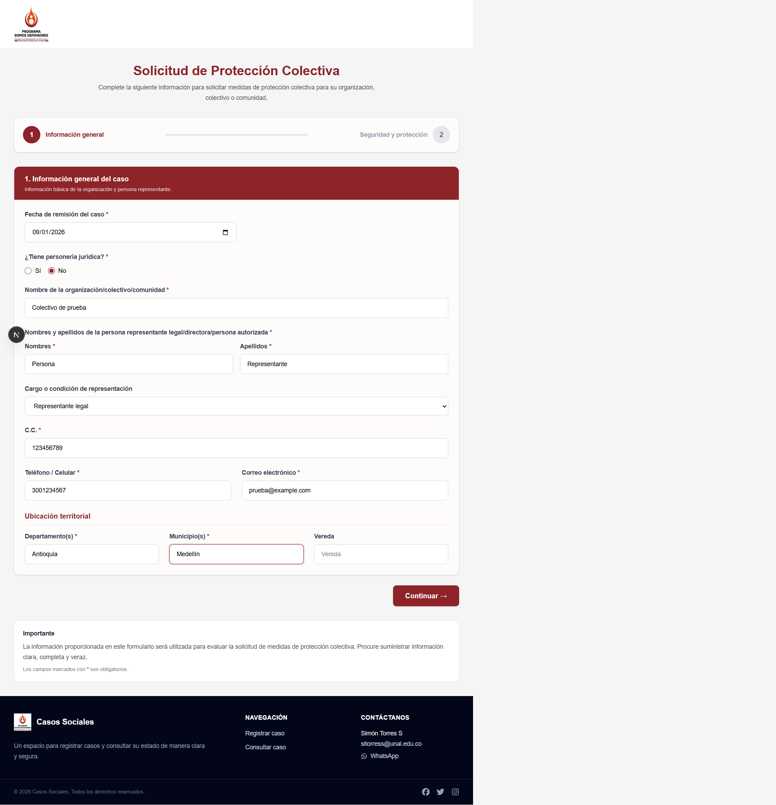
Etapa 1 del formulario de proteccion
colectiva: informacion general
Este formulario esta dirigido a organizaciones, colectivos y
comunidades. En esta primera etapa se identifica la organizacion y a la
persona que la representa.
En la primera etapa se solicita:
Fecha de remision del caso.
Existencia de personeria juridica.
Nombre de la organizacion, colectivo o comunidad.
Nombres, apellidos y cargo de la persona representante o
autorizada.
Numero de identificacion, telefono y correo electronico.
Departamento, municipio y vereda.
Como completar la etapa:
Diligencie la fecha de remision.
Indique si la organizacion tiene personeria juridica.
Escriba el nombre completo de la organizacion, colectivo o
comunidad.
Registre los datos de la persona representante, directora o
autorizada.
Complete la ubicacion territorial.
Presione Continuar para pasar a la segunda
etapa.
Etapa 2. Seguridad y
proteccion
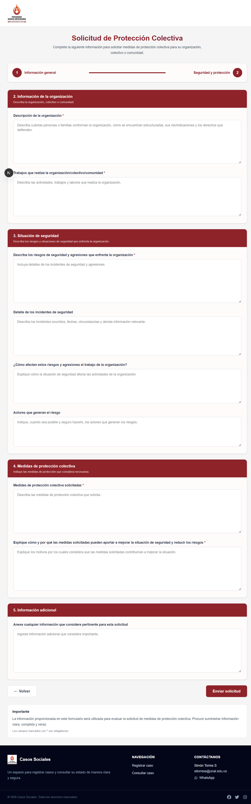
Etapa 2 del formulario de proteccion
colectiva: seguridad y proteccion
Esta pantalla concentra la descripcion de la organizacion y la
situacion de seguridad. Contiene cuatro bloques:
Informacion de la organizacion: numero de personas
o familias, estructura, reivindicaciones y derechos defendidos.
Situacion de seguridad: riesgos, agresiones,
incidentes, afectacion del trabajo y actores que generan el riesgo.
Medidas de proteccion colectiva: medidas
solicitadas y justificacion de como ayudarian a reducir los
riesgos.
Informacion adicional: datos pertinentes que no
hayan sido incluidos en los campos anteriores.
Los campos marcados con * son obligatorios. Revise que
las descripciones sean claras y veraces antes de presionar
Enviar solicitud.
Los campos marcados con * son obligatorios. La
informacion debe ser clara, completa y veraz, porque se utiliza para
evaluar la solicitud de medidas de proteccion colectiva.
3.5 Diligenciar pasantia
Etapa 1. Informacion
personal
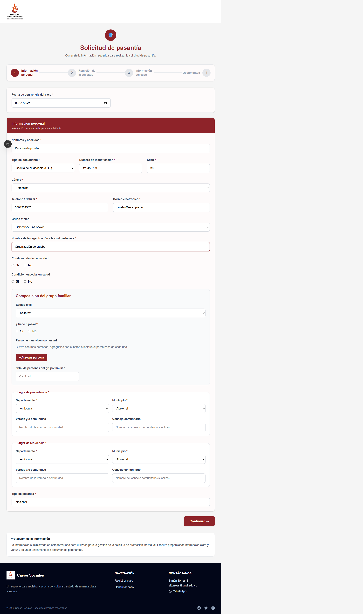
Etapa 1 del formulario de pasantia:
informacion personal
El formulario de pasantia utiliza las etapas Informacion
personal, Remision de la solicitud,
Informacion del caso y Documentos. En
esta primera etapa se registra la informacion de la persona y el tipo de
pasantia.
En la primera etapa se solicita:
Fecha de ocurrencia del caso.
Nombres y apellidos.
Tipo y numero de documento.
Edad y genero.
Telefono y correo electronico.
Grupo etnico, cuando aplique.
Organizacion a la que pertenece la persona solicitante.
Condiciones de discapacidad y salud.
Composicion del grupo familiar.
Lugar de procedencia y lugar de residencia.
Tipo de pasantia.
Los campos marcados con * son obligatorios.
Etapa 2. Remision de la
solicitud
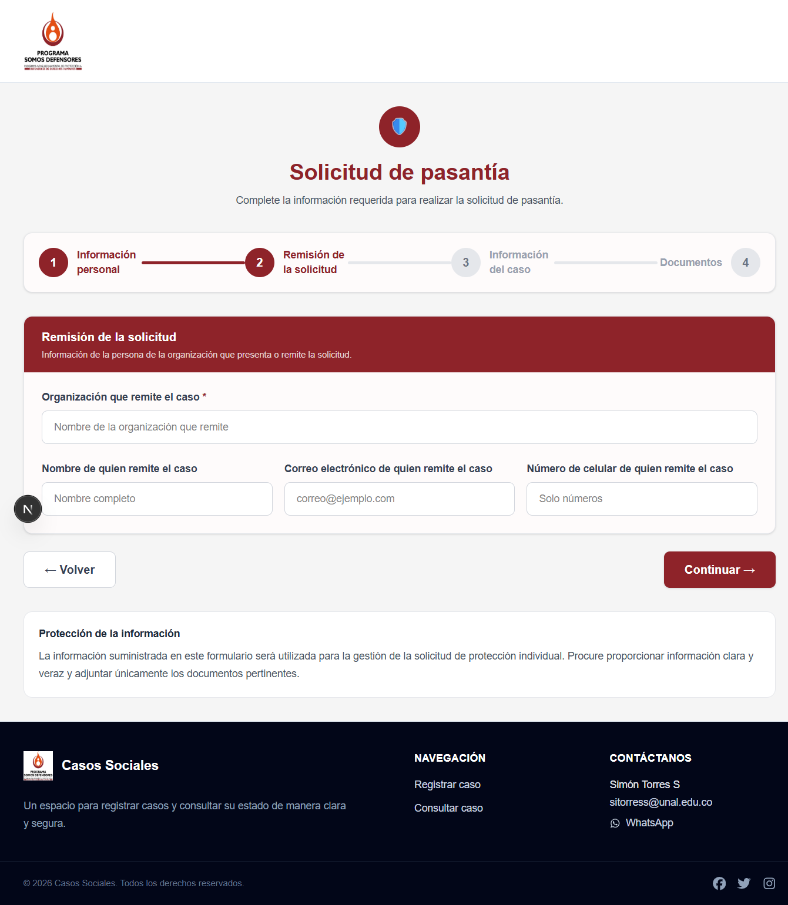
Etapa 2 del formulario de pasantia:
remision
Registre la organizacion que remite el caso y, si corresponde, el
nombre, correo electronico y celular de la persona que realiza la
remision. La organizacion remitente es obligatoria.
Etapa 3. Informacion del
caso
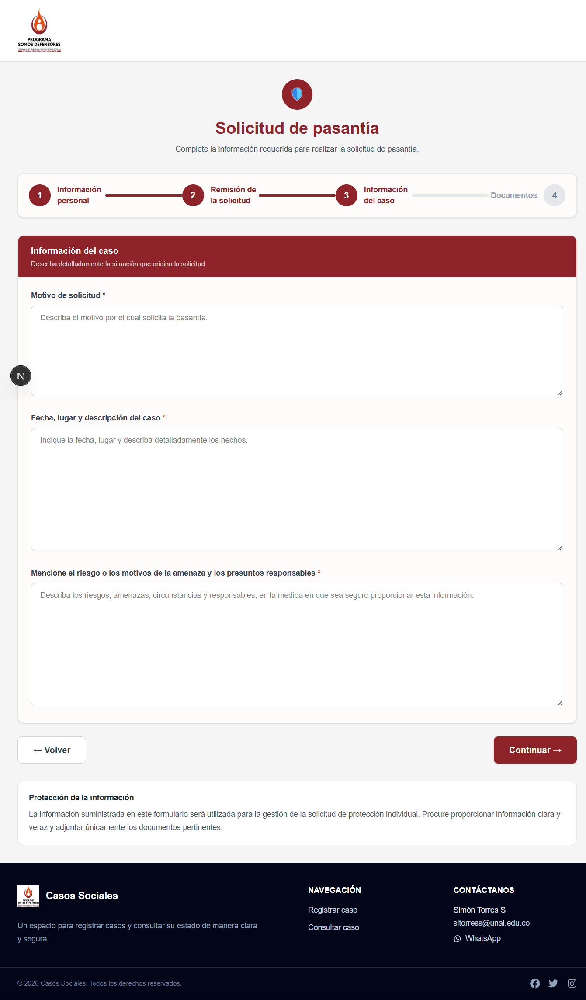
Etapa 3 del formulario de pasantia:
informacion del caso
Explique el motivo por el cual solicita la pasantia, la fecha, el
lugar y la descripcion de los hechos, junto con los riesgos o
circunstancias relevantes. Los tres campos de esta etapa son
obligatorios.
Etapa 4. Documentos
adjuntos
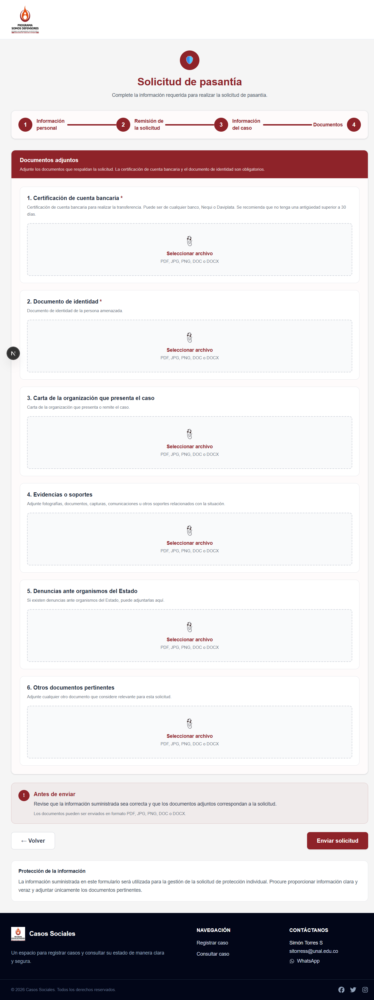
Etapa 4 del formulario de pasantia:
documentos
Adjunte la certificacion de cuenta bancaria y el documento de
identidad, que son obligatorios. Puede agregar carta de la organizacion,
evidencias, denuncias y otros documentos pertinentes.
Procedimiento:
Complete la fecha y la informacion personal.
Seleccione el tipo de documento, genero y demas opciones de las
listas.
Agregue las personas del grupo familiar cuando sea necesario.
Seleccione primero el departamento para cargar los municipios
disponibles y seleccione el tipo de pasantia.
Complete la remision, la informacion especifica del caso y los
documentos.
Revise los datos y envie la solicitud.
La plataforma utiliza la misma estructura de captura de informacion
personal que ayuda humanitaria, pero el caso queda clasificado como
pasantia.
Si una opcion del formulario no esta disponible o la pantalla muestra
un error, registre la incidencia con la fecha, la ruta visitada y el
mensaje mostrado. No vuelva a enviar varias veces la misma solicitud sin
confirmar primero si el registro fue creado.
3.6 Fuente publica de datos
La ruta /reportes presenta la Fuente publica de
datos. Esta seccion contiene reportes de demostracion mientras
se habilita la publicacion de los informes oficiales.
Actualmente se muestran:
Distribucion territorial de casos: enlaza al visor
geografico.
Tendencias mensuales: tarjeta de demostracion,
disponible proximamente.
Caracterizacion de casos: tarjeta de demostracion,
disponible proximamente.
Las tarjetas marcadas como Demo no deben
interpretarse como estadisticas oficiales. Cuando se publique un
reporte, revise su fecha de actualizacion, cobertura y notas
metodologicas antes de utilizarlo.
3.7 Reporte geografico de
casos
La ruta /geografia-publica ofrece un visor de mapas
alimentado por la API publica y las geometrias almacenadas en
PostGIS.
Seleccionar una vista:
Elija Departamentos para consultar la division
territorial nacional.
Elija Municipios para mostrar todos los municipios
disponibles.
Elija Por departamento y seleccione un departamento
en la lista para consultar sus municipios.
En la vista de departamentos puede hacer clic sobre cualquier
departamento. El visor cambia automaticamente a la vista de sus
municipios. El nombre del territorio bajo el cursor aparece en la
esquina superior derecha del mapa.
Al seleccionar un municipio se abre un modal con su nombre,
departamento y un resumen de prueba. Ese resumen es provisional y sera
reemplazado por informacion estadistica publica cuando el modulo de
reportes este disponible.
Descargas del visor:
PDF: se habilita al seleccionar un departamento o
municipio y descarga un resumen territorial de prueba.
CSV: aparece como control reservado para una futura
descarga y no ejecuta ninguna accion por ahora.
Si el mapa no carga, compruebe que el backend este disponible, que
NEXT_PUBLIC_API_URL apunte a la API correcta y que las
tablas geograficas hayan sido migradas.
3.8 Pie de pagina, contacto
y politicas
El pie de pagina identifica a Somos Defensores, contiene los enlaces
oficiales de Facebook, Instagram y X, y presenta el contacto
institucional:
Correos: proteccion@somosdefensores.org,
responsablesistema@somosdefensores.org y
comunicaciones@somosdefensores.org.
La seccion Politicas institucionales enlaza a
/politicas y contiene los apartados de privacidad,
tratamiento de datos personales y terminos de uso. Los textos visibles
actualmente indican cuando un documento se encuentra en
actualizacion.
La atribucion de desarrollo independiente aparece de forma discreta
al final del pie de pagina. Simon Torres Saldarriaga no hace parte de
Somos Defensores.
4. Acceso administrativo
4.1 Inicio de sesion
La pantalla administrativa esta disponible en
/login.
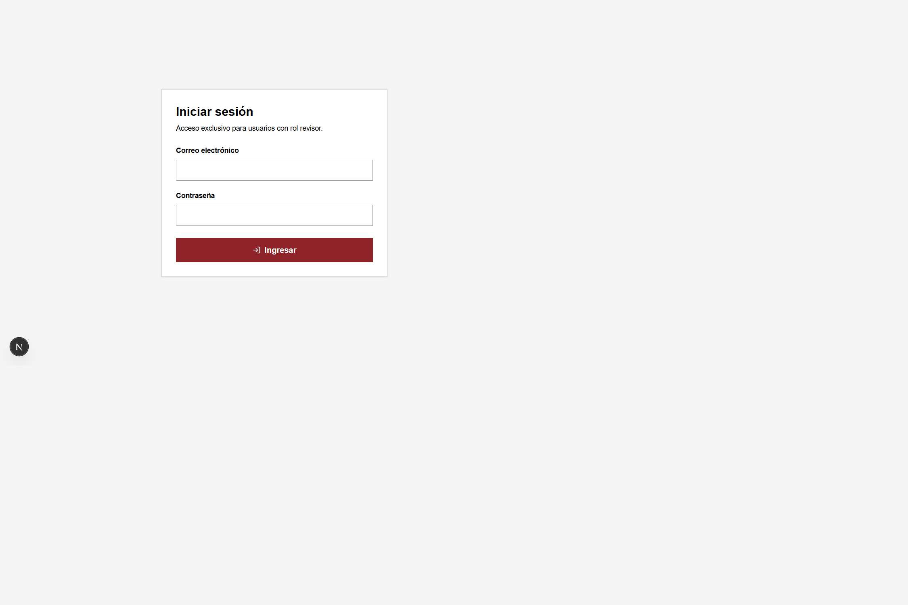
Inicio de sesion
administrativo
Pasos:
Escriba el correo electronico de la cuenta autorizada.
Escriba la contrasena.
Presione Ingresar.
Espere la redireccion al dashboard.
El acceso esta restringido a usuarios con rol de revision o
administracion. No comparta la contrasena ni guarde el token de acceso
fuera del navegador autorizado.
Si el inicio de sesion falla, revise el mensaje mostrado, confirme
que el correo este escrito correctamente y compruebe que el backend este
disponible. El dashboard redirige a esta pantalla cuando no existe una
sesion valida.
4.2 Dashboard
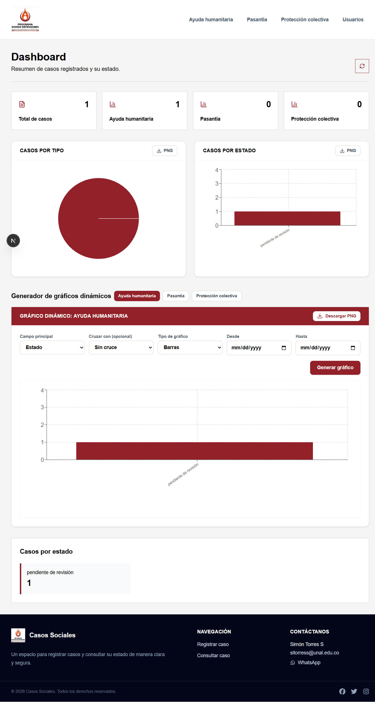
Dashboard administrativo
El dashboard administrativo presenta:
Total de casos.
Total por tipo de caso.
Distribucion por estado.
Grafico de casos por tipo.
Grafico de casos por estado.
Grafico dinamico por ayuda humanitaria, pasantia o proteccion
colectiva.
Boton para actualizar las metricas.
Como leer y utilizar el dashboard:
Revise la tarjeta Total de casos para conocer el
volumen general.
Compare las tarjetas por tipo: ayuda humanitaria, pasantia y
proteccion colectiva.
Consulte el grafico de casos por tipo para identificar la
distribucion de solicitudes.
Consulte el grafico de casos por estado para observar pendientes,
aprobados, finalizados u otros estados disponibles.
En Generador de graficos dinamicos, seleccione el
tipo de caso y el campo principal.
Use Cruzar con para comparar dos variables,
seleccione barras o torta y defina un rango de fechas si es
necesario.
Presione Generar grafico y use Descargar
PNG para guardar el resultado.
Use Actualizar metricas despues de registrar o
modificar varios casos.
Si no existen registros o la API no responde, el sistema muestra un
mensaje y no debe interpretarse como que se eliminaron casos.
4.3 Usuarios
La seccion de usuarios esta disponible en
/admin/usuarios y permite gestionar el equipo de validacion
y revision.
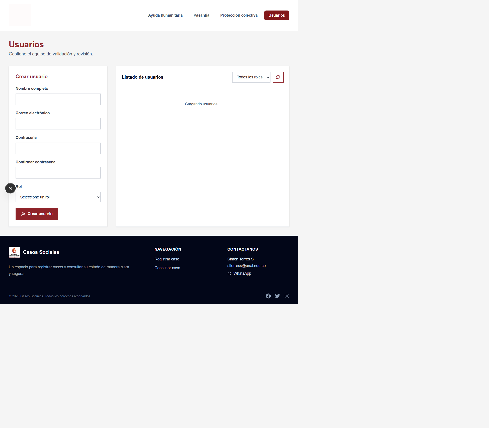
Administracion de usuarios
La pantalla se divide en dos areas:
Crear usuario: formulario para registrar nombre
completo, correo, contrasena, confirmacion de contrasena y rol.
Listado de usuarios: tabla con nombre, correo, rol
y acciones disponibles.
Crear una cuenta:
Escriba el nombre completo.
Registre un correo valido y que pertenezca a la persona
autorizada.
Defina una contrasena de al menos ocho caracteres.
Repita la contrasena exactamente en el campo de confirmacion.
Seleccione el rol Validador o
Revisor.
Presione Crear usuario.
Confirme el mensaje de creacion exitosa.
Filtrar y actualizar el listado:
Abra el selector Todos los roles.
Seleccione Validador o Revisor
para limitar los resultados.
Presione Actualizar listado para consultar
nuevamente la API.
Cambiar una contrasena:
Ubique la cuenta en el listado.
Presione Cambiar contraseña.
Escriba y confirme la nueva contrasena.
Verifique el mensaje de confirmacion.
Eliminar una cuenta:
Confirme que la cuenta seleccionada sea la correcta.
Presione Eliminar usuario.
Revise el aviso de confirmacion antes de aceptar.
Actualice el listado y confirme que la cuenta ya no aparece.
La administracion de usuarios es una funcion sensible. No cree
cuentas compartidas, no reutilice contrasenas y no elimine la unica
cuenta con rol de revisor. Las contrasenas nunca deben registrarse en
este manual ni compartirse por canales publicos.
4.4 Listados de casos
Los listados administrativos se consultan por tipo:
/admin/ayuda_humanitaria
/admin/pasantias
/admin/proteccion_colectiva
Segun el modulo, se puede:
Buscar por nombre, organizacion, documento, representante o
correo.
Filtrar por estado.
Filtrar por pago y rango de fechas en ayudas humanitarias.
Actualizar los datos desde el backend.
Exportar los registros a CSV.
Abrir la gestion detallada de un caso.
Enviar la invitacion de finalizacion del caso.
En ayudas humanitarias, la pantalla resume total de solicitudes,
pendientes, aprobadas y rechazadas. En proteccion colectiva resume
total, pendientes y resultados filtrados.
4.5 Gestion de un caso
Desde la fila del caso, abra la opcion de gestionar. Revise los datos
personales o de la organizacion, la informacion de contacto, el estado
actual y la informacion del caso antes de modificarlo.
Al cambiar un estado:
Verifique que esta trabajando sobre el caso correcto.
Lea toda la informacion disponible.
Seleccione el nuevo estado permitido para su rol.
Guarde el cambio.
Actualice el listado y confirme que el estado se refleja
correctamente.
Los estados pueden incluir pendiente,
en revision, validado, rechazado,
aprobado, en proceso de cierre,
desembolsado y finalizado, de acuerdo con el
flujo habilitado en el backend.
4.6 Finalizar un caso
Desde el listado administrativo, use la accion de finalizacion del
caso. El sistema genera un enlace unico y lo envia al correo asociado al
registro.
La persona destinataria abre el enlace recibido y debe:
Leer la informacion de cierre.
Escribir una respuesta en el campo de finalizacion.
Presionar Finalizar caso.
Confirmar el mensaje de registro exitoso.
El enlace tiene una vigencia de siete dias y solo puede utilizarse
una vez. Una vez registrada la respuesta, el caso pasa a estado
finalizado y el enlace deja de ser valido.
5. Gestion completa de un caso
El flujo administrativo se recorre desde el listado del tipo de caso.
Para la prueba incluida en el seeder, el registro aparece como
Caso de prueba Manual, con identificacion
PRUEBA-MANUAL-001 y estado
pendiente de revisión. Este registro es ficticio y sirve
para practicar sin usar datos de una persona real.
Para cargar este caso en un entorno local de pruebas, ejecute desde
backend:
php artisan db:seed --class=DatabaseSeeder
No ejecute este comando en produccion sin revisar antes los datos que
el seeder agrega o actualiza.
5.1 Ver el caso por secciones
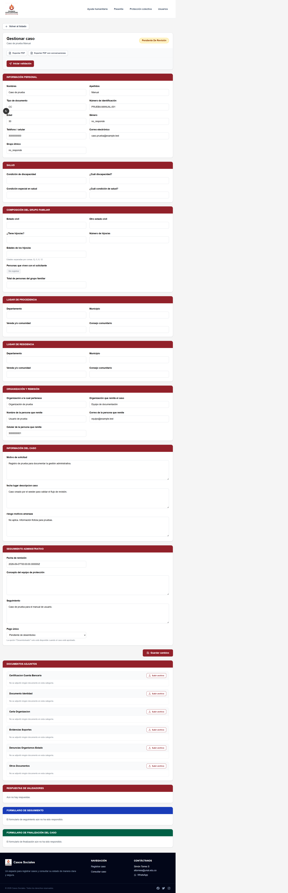
Pantalla Gestionar caso con sus secciones
administrativas
Desde el listado, presione Gestionar en la fila del
caso. La pantalla organiza la informacion en bloques para facilitar la
lectura:
Informacion personal: nombres, documento, edad,
genero, telefono, correo y grupo etnico.
Salud: discapacidad y condiciones especiales de
salud.
Composicion del grupo familiar: estado civil,
hijos, edades, personas convivientes y total del grupo.
Lugar de procedencia: departamento, municipio,
vereda o consejo comunitario.
Lugar de residencia: departamento, municipio,
vereda o consejo comunitario.
Organizacion y remision: organizacion, persona
remitente, correo, celular y tipo de pasantia cuando corresponda.
Informacion del caso: motivo de solicitud, fecha,
lugar, descripcion, riesgos y amenazas.
Seguimiento administrativo: fecha de remision,
concepto, seguimiento y datos de pago.
Respuestas de validadores: historial de decisiones,
comentarios y respuestas del equipo revisor.
Formulario de seguimiento: respuesta posterior al
apoyo o desembolso.
Formulario de finalizacion: respuesta de cierre y
estado del enlace.
Use Exportar PDF para generar un resumen del caso o
Exportar PDF con conversaciones para incluir las
respuestas de validacion. No descargue estos archivos en equipos
compartidos sin autorizacion.
5.2 Gestionar y guardar
cambios
Abra el caso desde el listado correspondiente.
Revise cada seccion antes de modificar datos.
Corrija o complete los campos permitidos.
Agregue documentos faltantes desde Documentos
adjuntos o use Resubir para reemplazar un
archivo.
Presione Guardar cambios.
Confirme el mensaje de actualizacion y revise que los datos
permanezcan correctos.
Los campos de identificacion interna, token, estado, fechas de
auditoria y documentos protegidos no se editan directamente. Un caso
aprobado o rechazado solo permite modificar el seguimiento y los
documentos autorizados por el backend. Un caso finalizado no puede
modificarse.
5.3 Validacion de caso
La validacion se inicia únicamente cuando el caso esta en
pendiente de revisión.
Abra el caso y revise la informacion y los documentos.
Presione Iniciar validación.
El sistema cambia el caso a
en proceso de validación.
Se generan invitaciones para hasta cinco usuarios con rol
validador.
Cada validador abre su enlace, revisa las secciones y documentos, y
selecciona una decision.
La decision puede ser Aprobar caso,
Rechazar caso o Solicitar
aclaración.
Si se solicita aclaracion, el comentario que indica que debe
aclararse es obligatorio.
El equipo revisor puede responder dentro del hilo de
validacion.
La decision automatica requiere consenso: si todos los validadores
responden aprobado, el caso pasa a aprobado; si todos
responden rechazado, pasa a rechazado; si existen
respuestas diferentes o aclaraciones, permanece en
en proceso de validación hasta que el equipo resuelva la
diferencia. Un enlace de validacion respondido, expirado o reutilizado
deja de estar disponible.
5.4 Desembolso
El desembolso se gestiona desde Seguimiento
administrativo.
Para ayuda humanitaria:
El caso debe estar en estado aprobado.
En Pago único, seleccione
Pendiente de desembolso o Esperando desembolso
según el estado interno.
Cuando el pago se haya realizado, seleccione
Desembolsado.
Confirme el mensaje de actualizacion.
El backend no permite marcar como desembolsado un caso que no este
aprobado. Para pasantias, el seguimiento de pagos se maneja por
Primer pago, Segundo pago y
Tercer pago; actualice cada uno con el estado que
corresponda.
5.5 Formulario de seguimiento
El formulario de seguimiento se habilita para un caso aprobado. En
ayuda humanitaria, además, el pago debe estar marcado como
desembolsado.
Presione Formulario de seguimiento para enviarlo
por correo, o Copiar link del formulario de seguimiento
para compartir el enlace manualmente.
El destinatario abre el enlace temporal
/seguimiento/{token}.
Debe describir su situacion actual; este campo es obligatorio.
Puede indicar si recibio el apoyo o desembolso: si, parcialmente o
no.
Si la respuesta es parcial o negativa, explique la situacion del
apoyo.
Seleccione si la seguridad mejoro, permanece igual o empeoro.
Agregue comentarios adicionales si es necesario.
Presione Enviar seguimiento.
El enlace vence en siete dias y solo puede utilizarse una vez. La
respuesta queda visible en la seccion Formulario de
seguimiento del caso.
5.6 Formulario de finalizacion
La finalizacion solo se habilita despues de que el formulario de
seguimiento haya sido respondido y el caso permanezca aprobado.
Desde el caso, presione Finalizar caso para enviar
la invitacion, o Copiar link para finalizar caso para
compartirla manualmente.
El destinatario abre /finalizacion/{token}.
El enlace valida que el caso siga aprobado, que no haya expirado y
que no se haya usado.
La persona escribe una respuesta de finalizacion de hasta 5000
caracteres.
Presiona Finalizar caso.
El sistema registra la respuesta, invalida los enlaces pendientes y
cambia el estado a finalizado.
Un caso finalizado queda bloqueado para modificaciones posteriores.
Si el enlace es invalido, ya fue utilizado o expiro, el equipo revisor
debe generar una nueva invitacion cuando el flujo lo permita.
6. Roles y permisos
Administrador: gestiona usuarios, casos, metricas y
configuraciones autorizadas.
Equipo de validacion de casos: revisa la
informacion y valida solicitudes segun sus permisos.
Equipo de revision de casos: hace seguimiento,
actualiza estados y puede iniciar el proceso de finalizacion.
El backend aplica autenticacion por token y middleware de roles. La
interfaz visible no sustituye las restricciones del servidor: una accion
solo debe considerarse exitosa cuando la API confirma el resultado.
7. Mensajes y solucion de
problemas
La pagina no carga
Compruebe que el frontend este ejecutandose.
Compruebe que la URL y el puerto sean correctos.
Revise la consola del navegador y los registros del backend.
Recargue la pagina despues de confirmar que ambos servicios estan
activos.
No se muestran casos
administrativos
Confirme que inicio sesion con un usuario autorizado.
Presione Actualizar.
Revise si hay filtros activos y use la opcion para limpiarlos.
Compruebe que el backend responda y que la base de datos tenga
registros.
No se puede enviar un
formulario
Revise los campos obligatorios.
Compruebe los formatos de correo, telefono, fechas y
documentos.
Verifique que los archivos cumplan las restricciones del
formulario.
Evite recargar o enviar varias veces hasta confirmar el
resultado.
El enlace de finalizacion
no funciona
El enlace puede haber expirado, haber sido utilizado o estar
incompleto. Solicite una nueva invitacion al equipo de revision. No
reutilice enlaces recibidos anteriormente.
8. Seguridad y proteccion de
datos
Use unicamente los datos necesarios para atender el caso.
No envie numeros de identificacion, documentos o tokens por canales
publicos.
Cierre la sesion al terminar una jornada de revision.
No comparta cuentas administrativas.
Verifique destinatarios antes de enviar una invitacion de
finalizacion.
No descargue o exporte listados en equipos compartidos sin
autorizacion.
9. Alcance y limitaciones
observadas
Este documento refleja la version capturada el 7 de septiembre de
2026. La disponibilidad de listados, metricas, cambios de estado y
envios depende de la API, la base de datos y el rol autenticado.
Algunas rutas y formularios pueden estar en proceso de integracion.
Los reportes de la fuente publica, el resumen del modal municipal y la
descarga PDF del visor son demostraciones y no representan datos
oficiales hasta que se publique la informacion correspondiente. Si un
enlace de navegacion lleva a una ruta distinta de la documentada, use la
ruta visible en la barra del navegador y reportela al equipo de soporte
para actualizar este manual.
10. Soporte y reporte de
incidentes
Para reportar un problema, incluya:
Fecha y hora.
Usuario o rol, sin incluir la contrasena.
Ruta visitada.
Accion realizada.
Mensaje exacto mostrado.
Captura sin datos personales visibles.
El pie de pagina de la aplicacion muestra los canales de contacto
disponibles para la organizacion.
Para asuntos institucionales o sobre el funcionamiento de la
plataforma, contacte a los canales oficiales:
El software fue desarrollado de forma independiente por Simon
Torres Saldarriaga. Su contacto tecnico es
sitorress@unal.edu.co; no hace parte de Somos
Defensores.
11. Glosario
Caso: registro de una solicitud en la
plataforma.
Estado: etapa actual del caso.
Token: credencial temporal usada para autenticar
una sesion o un enlace.
API: servicio del backend que recibe y entrega la
informacion.
Rol: conjunto de permisos asignados a una
cuenta.
CSV: archivo de texto que permite exportar
registros tabulares.
Finalizacion: registro de la respuesta de cierre
que cambia el caso a finalizado.
FeatureCollection: formato GeoJSON que agrupa
entidades geograficas como departamentos o municipios.
PostGIS: extension espacial de PostgreSQL utilizada
para almacenar y consultar las geometrias de Colombia.
Visor geografico: pantalla publica que representa
departamentos y municipios, permite seleccionar territorios y prepara
descargas.
12. Control de cambios del
manual
Actualice este documento cuando se agregue o retire un formulario,
cambien los estados, se modifiquen los roles, cambien las rutas publicas
y administrativas o se habiliten reportes oficiales. Las capturas deben
renovarse cuando la interfaz cambie de forma visible.
13. Rutas
publicas de mapas para administracion tecnica
Estas rutas no requieren autenticacion y devuelven una respuesta
FeatureCollection en formato GeoJSON:
GET /api/publico/mapas/departamentos
GET /api/publico/mapas/municipios
GET /api/publico/mapas/departamentos/{departamento}/municipios
La primera devuelve los departamentos, la segunda devuelve todos los
municipios y la tercera filtra los municipios por el nombre o
identificador almacenado del departamento.
Las geometrias se importan desde
backend/storage/app/private/colombia-geojson.json. Aunque
el archivo tiene extension .json, su contenido es TopoJSON
y contiene las capas depts y mpios. Las
migraciones PostGIS crean las tablas
departamentos_geometrias y
municipios_geometrias, con SRID 4326 e indices espaciales
GIST.
Para preparar una base local con las geometrias, ejecute desde
backend:
php artisan migrate
La base de datos debe ser PostgreSQL con la extension PostGIS
habilitada. No exponga el archivo privado ni modifique sus datos
directamente en produccion sin un respaldo y una migracion
controlada.